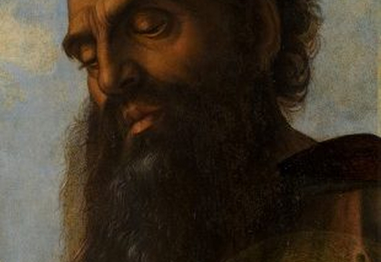

Exhibition
Discover two million years of human
history and culture
Bellini and Sodoma

-
On the occasion of the Easter celebrations, the Directorate of Museums and Cultural Heritage, in collaboration with the Directorate of the Pontifical Villas, presents the exhibition “Bellini and Sodoma. Passion of Christ”, to be inaugurated this coming 5 April at the Castel Gandolfo Museum Complex. For six months, the museum spaces located on the lower floor of the Palace will host two extraordinary works: the Lamentation over the dead Christ by Giovanni Bellini (c. 1440- 1516) and the Dead Christ of Giovanni Antonio Bazzi, known as il Sodoma (1477-1549). Curated by Fabrizio Biferali, Head of the Department of the XV-XVI Century Art, the exhibition explores the theme of the Passion of Christ, heart of the Christian tradition and symbol of the sacrifice of Jesus for the redemption of humanity.
Bellini's Lamentation over the dead Christ, oil on panel, created in 1475 for the church of Saint Francis in Pesaro, depicts the moment in which Mary Magdalene, Joseph of Arimathaea and Nicodemus prepare the body of Christ for burial, an episode narrated in the Gospel of John (XIX, 38-40). The work is distinguished by the intense expression of pain, evident in the interwoven hands of Christ and Mary Magdalene.
Confiscated by French troops in 1797 and exhibited at the Muséum Central des Arts in the Palace of the Louvre, the panel was retorned to Italy in 1816 and finally positioned in the Vatican Pinacoteca. Initially attributed to Mantegna, only in 1871 was it recognized as the work of Bellini, as the cymatium of the famous Pesaro Altarpiece. Recently restored by Marco Pratelli, master restorer of the Paintings and Wood Materials Restoration Laboratory, the work has regained its original chromatic splendour, thanks to the series of painstaking diagnostic investigations conducted by the Cabinet of Scientific Research and the generosity of the Illinois Chapter of the Patrons of the Arts in the Vatican Museums.
- 
Jubilees
-
The exhibition is entitled “Jubilees. Rare Documents from the Vatican Collections” and will accompany pilgrims and visitors to the Museums throughout the entire Holy Year, starting from 5 March. A result of a collaboration between the Vatican Museums and the Vatican Apostolic Archive, it will take place in the evocative and historic spaces adjacent to the Sistine Hall of the Vatican Apostolic Library: the Pauline Rooms, which on the occasion of the special Jubilee initiative will be exceptionally open to the public, housing an exhibition for the first time.
The Pauline Rooms include the first premises of the “new” Pontifical Archive of the Holy See, constituted by Paul V Borghese between 1610 and 1612.Formerly used as the residence of the Cardinal Librarians of the Holy Roman Church, they had remained unused after the death of Cardinal Cesare Baronio in 1607. The rooms were furnished with poplar cabinets, bearing the noble arms of the House of Borghese, and frescoed in the upper part with a cycle of historical scenes. The protagonist of almost every scene is a written document, whose preservation was ensured by the archives, an instrument of government and protection of the spiritual and territorial interests of the Roman Church.
The exhibition is intended to introduce the meaning of the Jubilee, with the invitation to live the experience of the visit from both a spiritual and an art-historical point of view, bearing witness to the importance also of the documentary “material” aspects linked to the Holy Year. “The Apostolic Archive thus opens up to a wider public, with a precious selection of jubilee documents in normally inaccessible environments”, emphasizes Father Rocco Ronzani, Prefect of the Vatican Apostolic Archive, “confirming its role as custodian of the memory of the history of the Church and of humanity”. Through the items on display it will be possible to rediscover and ceremony and liturgies of the Jubilee years. Prominent among these are some precious original documents from the Vatican Apostolic Archive, such as the Bulls of Indiction of the Jubilees of 1475, 1925, 1975, and 2000, as well as the most recent, signed by Pope Francis, for the indiction on 9 May 2024 of the Jubilee 2025 “Pilgrims of Hope”.
Christmas at Castel Gandolfo
-
On the occasion of the Easter celebrations, the Directorate of Museums and Cultural Heritage, in collaboration with the Directorate of the Pontifical Villas, presents the exhibition “Bellini and Sodoma. Passion of Christ”, to be inaugurated this coming 5 April at the Castel Gandolfo Museum Complex. For six months, the museum spaces located on the lower floor of the Palace will host two extraordinary works: the Lamentation over the dead Christ by Giovanni Bellini (c. 1440- 1516) and the Dead Christ of Giovanni Antonio Bazzi, known as il Sodoma (1477-1549). Curated by Fabrizio Biferali, Head of the Department of the XV-XVI Century Art, the exhibition explores the theme of the Passion of Christ, heart of the Christian tradition and symbol of the sacrifice of Jesus for the redemption of humanity.
Bellini's Lamentation over the dead Christ, oil on panel, created in 1475 for the church of Saint Francis in Pesaro, depicts the moment in which Mary Magdalene, Joseph of Arimathaea and Nicodemus prepare the body of Christ for burial, an episode narrated in the Gospel of John (XIX, 38-40). The work is distinguished by the intense expression of pain, evident in the interwoven hands of Christ and Mary Magdalene. Confiscated by French troops in 1797 and exhibited at the Muséum Central des Arts in the Palace of the Louvre, the panel was retorned to Italy in 1816 and finally positioned in the Vatican Pinacoteca.
Initially attributed to Mantegna, only in 1871 was it recognized as the work of Bellini, as the cymatium of the famous Pesaro Altarpiece. Recently restored by Marco Pratelli, master restorer of the Paintings and Wood Materials Restoration Laboratory, the work has regained its original chromatic splendour, thanks to the series of painstaking diagnostic investigations conducted by the Cabinet of Scientific Research and the generosity of the Illinois Chapter of the Patrons of the Arts in the Vatican Museums.